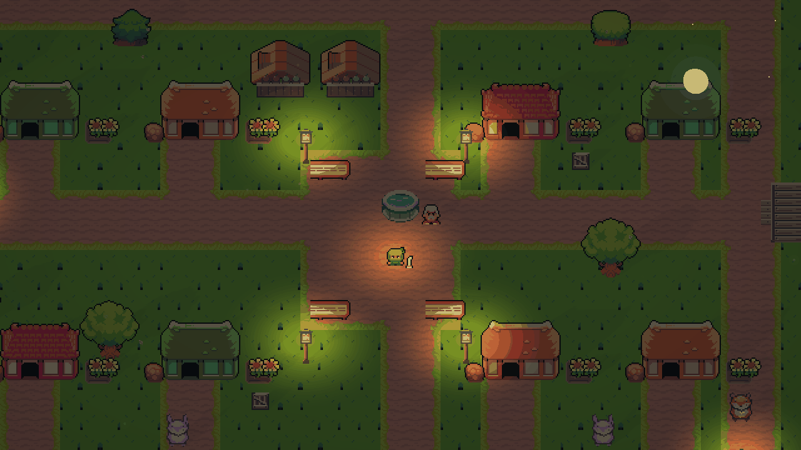
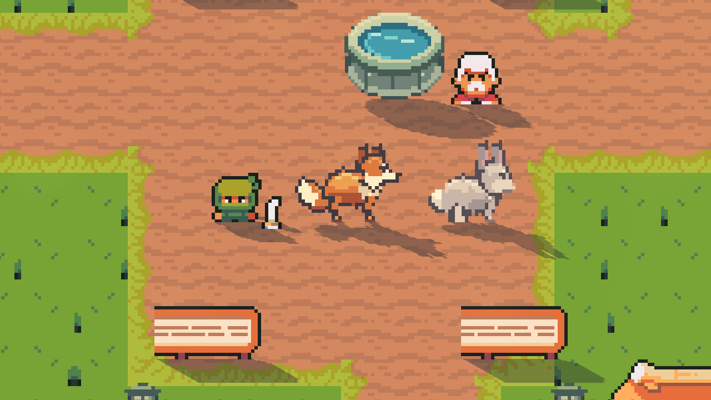

GODOT 4.7.2 · FOUNDATION 0.2.1
Свет между днём и ночью
Реальные кадры игры: семь фаз суток, оригинальное вступление, первый запуск/продолжение, сохранение из Esc и настраиваемое автосохранение. Это не браузерная версия игры.

11 990 проверок игры + 80 проверок сохранения/часов/вступления, 78 Python-тестов. 22 новых кадра; элементы меню не выходят за границы. На Windows данные хранятся в %APPDATA%\LanternValley. Нативный Windows и физическая видеокарта не тестировались.
22 кадра · открыть любой в полном размере
Новые оригинальные звери

Нажмите на крупный план, чтобы открыть запись шага. Иллюстрация внутри меню/вступления создана генератором изображений; приведённые здесь кадры — настоящая отрисовка Godot.